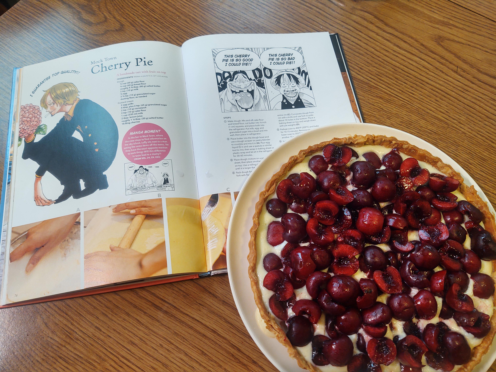
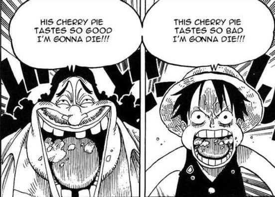

Mock Town Cherry Pie

Handmade Tart with Fruit
According to some this Mock Town Cherry Pie is
The best Cherry Pie found on the Grand Line.
However there are also those who consider it to the
worst Cherry Pie they've ever tasted.
Chef Sanji has put his own spin on it to ensure all are satisfied!
One thing is for certain...
A Man's Dream Will Never Die!!

Ingredients
Dough
- 60g weak flour
- 60g strong flour
- 80g salted butter
- 10g milk
- ½ egg
- 15g granulated sugar
- flour (as needed)
Custard Cream
- 2 egg yolks
- 65g granulated sugar
- 10g corn starch
- 10g weak flour
- 230mL milk
- 2 tbsp lemon juice
- 20g salted butter
- 18 American cherries
Directions
- First, we'll make the dough. Mix the flour together and sift. Cut butter into 1cm blocks.
Chill both flour mixture and butter in the fridge. Mix milk, eggs, and sugar well, then chill
in fridge.
- Add the butter to the bowl with the flour chop-mix with a pastry cutter (A). Pour in 1's egg mixture
and mix together with a spatula. Wrap in plastic wrap or parchment paper, and refrigerate 30 minutes
to 1 hour.
- Remove dough from refrigerator. Place parchment paper on top of dough, and spread to proper size to fit
in a pie pan with a rolling pin
- Place the dough in the pie dish, making sure that it is tightly against the bottom and pressed into the
corners. Use a floured fork and press along the walls of the pie dish. Any dough sticking out over the
edge should be cut off. Using a fork, open 10 holes in the bottom. Cover with parchment paper and fill with
weight stones.
- Preheat oven to 200°C. Cook 15 minutes. Remove stones, reduce heat to 180°C and cook an additional 15 minutes.
Cool on a cake rack.
- In a pot, add egg yolk, sugar, cornstarch, weak flour, milk and mix. Turn on stove. Mix until thickened.
Remove from heat. Add butter and lemon juice, and mix until smooth. After cooled, pour into pie dish.
- Remove cherry stems and cut cherries in half, remove seeds. Place on top of the custard cream and chill in the
refrigerator.